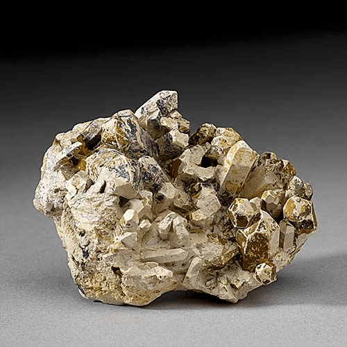
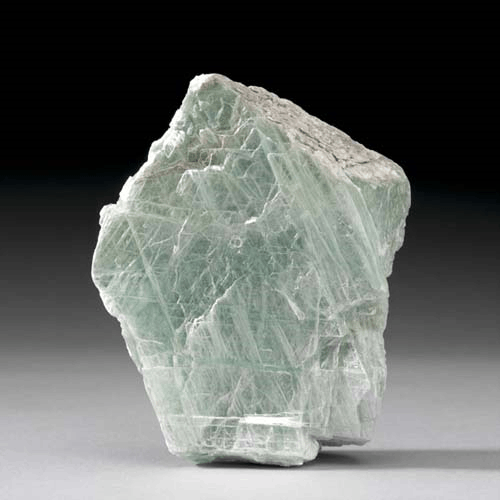
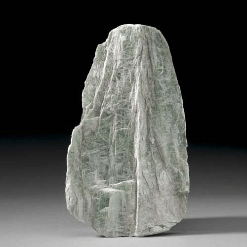

Talc - Mg3Si4O10(OH)2
Phyllosilicates




Habit: Colorless, white, pale green, bright emerald to dark green, brown or gray. Crystals platy; also fibrous, fine-grained compact or massive. Pearly, greasy, dull luster; transparent to translucent. White streak.
Environment: A metamorphic mineral that results from metamorphism of magnesian minerals, such as serpentine, pyroxene, amphibole and olivine, in the presence of carbon dioxide and water.
Etymology: From the Arabic talq, meaning "pure," probably alluding to the color of its powdered form.
Talc is used in many industries, including pharmaceuticals, cosmetics (talcum powder, baby powder to prevent diaper rash), ceramics (to prevent crazing), paper making (as a filler), plastics, rubber, paint and coatings.